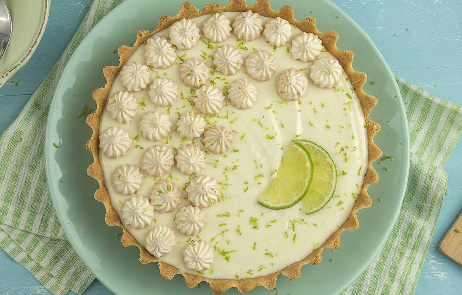

Ingredientes:
- Massa
- - 200 g de biscoito de maisena,
- - 150 g de margarina.
- Recheio
- - 1 lata de leite condensado (395 g);
- - 1 caixa de creme de leite (200 g);
- - suco de 4 limões;
- - raspas de 2 limões.
- Cobertura
- - 3 ou 4 claras de ovo;
- - 3 colheres (sopa) de açúcar;
- - raspas de 2 limões para decorar.
Modo de preparo:
- Massa
- 1 - Triture o biscoito de maisena em um liquidificador ou processador.
- 2 - Junte a margarina e bata mais um pouco.
- 3 - Despeje a massa em uma forma de fundo removível (27 cm de diâmetro).
- 4 - Com as mãos, espalhe os biscoitos triturados no fundo e nas laterais da forma, cobrindo toda área de maneira uniforme.
- 5 - Leve ao forno médio (180° C), preaquecido, por aproximadamente 10 minutos.
- Recheio
- 1 - Bata todos os ingredientes no liquidificador (exceto as raspas de limão) até obter um creme liso e firme.
- 2 - Recheie a massa já assada e leve à geladeira por 30 minutos.
- Cobertura
- 1 - Bata as claras em neve e acrescente o açúcar.
- 2 - Misture até obter um ponto de suspiro e leve ao forno até dourar. Depois despeje a cobertura e acrescente as raspas de limão.